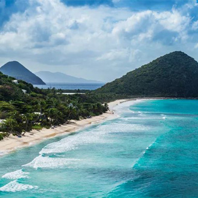

본문콘텐츠영역
The Republic of Cuba, abbreviated Cuba, is the only socialist country in the Americas, consisting of the largest islands and neighboring islands in the Caribbean Islands of North America, and its capital is Havana.
about

Haiti and the Dominican Republic on Hispaniola Island to the east, the Cayman Islands and Jamaica to the south, and the Florida Strait to the north. The capital is Havana. It is geographically included in North America, but is also included in Central America in a broad sense.It is commonly called the "Backyard of the United States of America," but rather it is on the road connecting Europe and Latin America. It is also referred to as the "Red Island Rising in the Caribbean" in commemoration of the first communist regime established in the Americas. Since Fidel Castro came to power in the Cuban Revolution involving Che Guevara, he has been at odds with the United States as a communist country, enduring economic difficulties due to the U.S. economic blockade, but declared normalization of diplomatic relations on December 18, 2014.
moreCuba is the archipelago of the Caribbean, and Cuba is the main island. The surrounding islands are classified into four categories: the Colorado Islands, the Savannah Camaguei Islands, the Hardines de la Reina Islands, and the Canareos Islands. The main island of Cuba is the 17th largest island in the world, covering an area of 105,006 square kilometers and covering 1,233 km in length. Cuba's second largest island is Isla de la Huventud in the southwest, with an area of 3,056 square kilometers. Cuba has a total area of 110,860 square kilometers. Cuba, like any other country, is affected by global warming, and by 2050, 6% of its land will be submerged in the sea, according to a report. The main island is mostly a flat or hilly plain. At the southeastern end of the island is the steep Sierra Maestra Mountains, the highest of which is Mount Pico Real del Turkino (1,975 m high).
Cuba's premier resort with more than 70 all-inclusive hotels and a variety of tour programs
place
Each city introduces a mysterious and amazing Cuban tourist attraction
-
- Havana
- Where everything a traveler expects of Cuba exists
-

- Trinidad
- Where everything a traveler expects of Cuba exists
-
- Varadero
- Cuba's premier resort with more than 70 all-inclusive hotels and a variety of tour programs
-
- Vinales
- a small green village. the center of travel in western Cuba.
-
- Santa Clara
- a city remembered for the historic battle of Che Guevara
-
- Santiago de Cuba
- the proud former capital of Cuba. A place where heat, dance, and music can't beat you anywhere
-
- cienfuegos cuba
- a city of beautifully cremated buildings
-
- matanzas
- where the faint traces of Koreans and the bridge embroidered two rivers are elegant